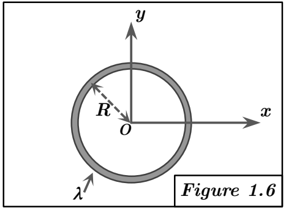

Solution Figure 1.6 : Anneau circulaire centré en O

FIGURE 6 - Anneau circulaire centré en O
Méthode requise : Calcul direct.
Concepts Clés :
- Coordonnées polaires (ou cylindriques) : Particulièrement adaptées à la géométrie circulaire ou cylindrique. Pour un anneau dans le plan $z = 0$, on utilise $x = R \cos \theta$, $y = R \sin \theta$, $z = 0$. L'élément de longueur est $dl = R d\theta$.
- Corps linéique : $dm = \lambda dl = \lambda R d\theta$.
- Axe de Révolution (Oz) : L'anneau possède une symétrie de révolution autour de l'axe Oz. Cela a deux conséquences majeures pour le tenseur d'inertie en O (qui est sur l'axe) :
- Oz est un axe principal d'inertie. Plus généralement, tout axe passant par O dans le plan xOy est aussi un axe principal. La matrice d'inertie en O est donc diagonale ($D = E = F = 0$).
- Les moments d'inertie par rapport à tous les axes passant par O dans le plan perpendiculaire à l'axe de révolution (ici, le plan xOy) sont égaux. Donc $A = B$.
- Plan de symétrie (z=0) : L'anneau est contenu dans ce plan, qui est un plan de symétrie. Cela implique $E = I_{xz} = 0$ et $F = I_{yz} = 0$.
- Intégrales trigonométriques classiques : Pour $\theta \in [0, 2\pi]$ :
$$ \int_0^{2\pi} \sin^2 \theta d\theta = \pi $$
$$ \int_0^{2\pi} \cos^2 \theta d\theta = \pi $$
$$ \int_0^{2\pi} \sin \theta \cos \theta d\theta = \frac{1}{2} \int_0^{2\pi} \sin(2\theta) d\theta = 0 $$
$$ \int_0^{2\pi} d\theta = 2\pi $$
Géométrie et Paramétrisation :
- Cercle de rayon R centré en O, dans le plan $z = 0$.
- Point P : $ P = \begin{pmatrix} R \cos \theta \\ R \sin \theta \\ 0 \end{pmatrix} $, avec $\theta \in [0, 2\pi]$.
- Élément de longueur : $dl = R d\theta$.
- Élément de masse : $dm = \lambda dl = \lambda R d\theta$.
- Masse totale : $ M = \int_0^{2\pi} \lambda R d\theta = \lambda R \int_0^{2\pi} d\theta = \lambda R (2\pi) = 2\pi R \lambda $.
Calcul des termes du tenseur :
Calcul de A :
$$ A = \int (y^2 + z^2) dm = \int_0^{2\pi} ((R \sin \theta)^2 + 0^2) \lambda R d\theta $$
$$ = \lambda R^3 \int_0^{2\pi} \sin^2 \theta d\theta = \lambda R^3 (\pi) $$
En utilisant $M = 2\pi R \lambda \implies \lambda = M / (2\pi R)$ :
$$ A = \left(\frac{M}{2\pi R}\right) R^3 \pi = \frac{M R^2}{2} $$
Calcul de B :
Par symétrie de révolution autour de Oz, on doit avoir $A = B$. Vérifions :
$$ B = \int (x^2 + z^2) dm = \int_0^{2\pi} ((R \cos \theta)^2 + 0^2) \lambda R d\theta $$
$$ = \lambda R^3 \int_0^{2\pi} \cos^2 \theta d\theta = \lambda R^3 (\pi) = \frac{M R^2}{2} $$
(Comme A, attendu).
Calcul de C :
$$ C = \int (x^2 + y^2) dm = \int_0^{2\pi} ((R \cos \theta)^2 + (R \sin \theta)^2) \lambda R d\theta $$
$$ = \int_0^{2\pi} R^2 (\cos^2 \theta + \sin^2 \theta) \lambda R d\theta = \int_0^{2\pi} R^2 (1) \lambda R d\theta $$
$$ = \lambda R^3 \int_0^{2\pi} d\theta = \lambda R^3 (2\pi) $$
$$ = (2\pi R \lambda) R^2 = M R^2 $$
(Vérification du théorème de l'axe perpendiculaire : $C = A + B = \frac{MR^2}{2} + \frac{MR^2}{2} = MR^2$. OK.)
Calcul de D :
$$ D = \int xy dm = \int_0^{2\pi} (R \cos \theta)(R \sin \theta) \lambda R d\theta $$
$$ = \lambda R^3 \int_0^{2\pi} \sin \theta \cos \theta d\theta = \lambda R^3 (0) = 0 $$
(Attendu par symétrie de révolution).
Calcul de E et F :
$$ E = \int xz dm = \int_0^{2\pi} (R \cos \theta)(0) \lambda R d\theta = 0 $$
$$ F = \int yz dm = \int_0^{2\pi} (R \sin \theta)(0) \lambda R d\theta = 0 $$
(Attendu par symétrie de révolution et plan z=0).
Résultat :
Le tenseur d'inertie de l'anneau au point O est :
$$ [I_O]_{1.6} = \begin{pmatrix} MR^2/2 & 0 & 0 \\ 0 & MR^2/2 & 0 \\ 0 & 0 & MR^2 \end{pmatrix} $$
Commentaire :
Le résultat ($A = B$, $D = E = F = 0$) est cohérent avec la symétrie de révolution autour de Oz. La relation $C = A + B$ est cohérente avec la nature planaire ($z = 0$) de l'objet.